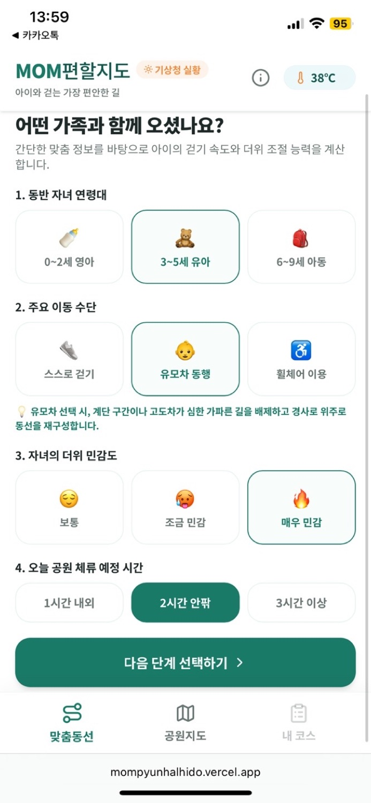
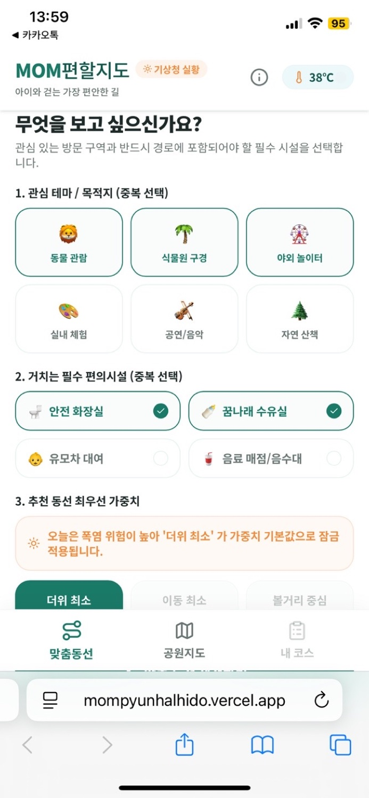
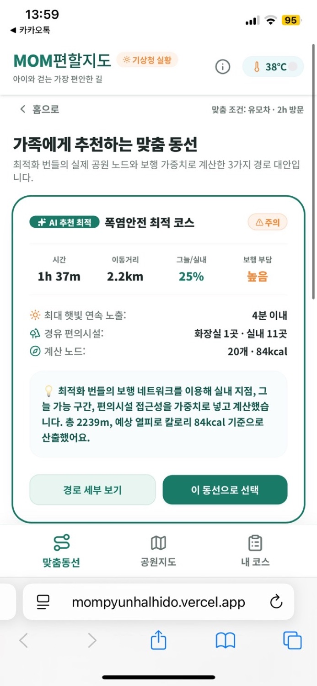
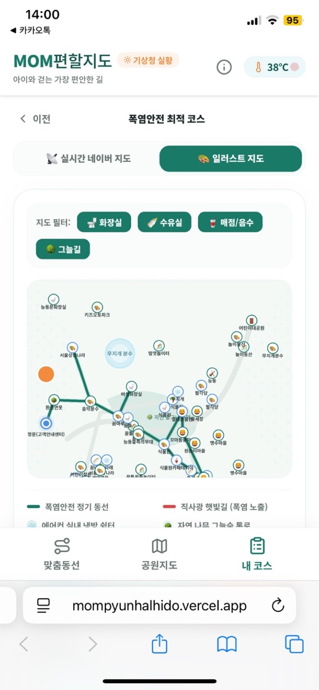
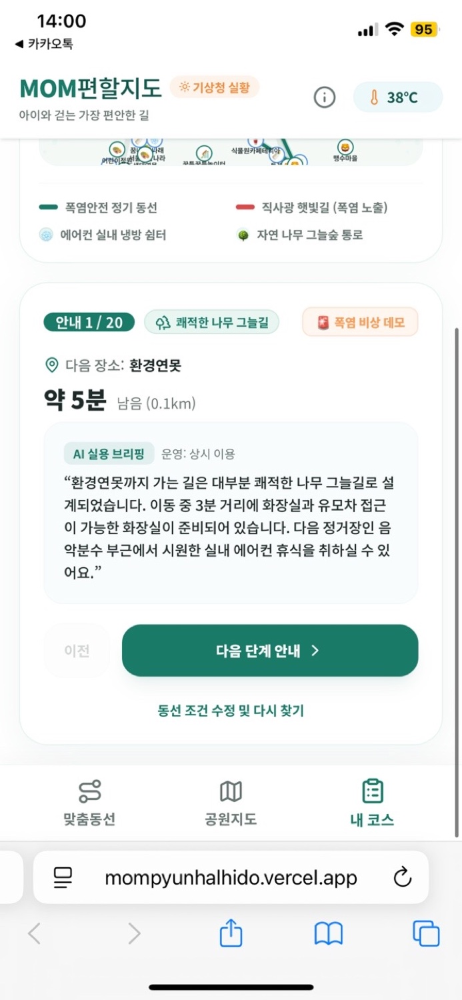

Service flow
가족의 조건을 반영해
동선을 설계합니다.





더위는 피하고,
즐거움은 가까이.
맘편할 지도는 날씨, 그늘, 보행 부담, 필수 편의시설 접근성을 종합해 아이와 부모에게 어울리는 서울어린이대공원 이동 동선을 설계하는 AI 기반 서비스입니다.
Overview
서울어린이대공원 공모전에 출품한 프로젝트입니다. 가족마다 다른 아이의 연령, 이동 수단, 더위 민감도, 체류 시간을 입력하면 공원 안에서의 우선순위를 반영해 맞춤 동선을 제안합니다. 현재 공모전 참여중
Problem
아이와 함께하는 공원 방문에서는 보고 싶은 장소만큼이나 더위, 그늘, 이동 거리, 화장실과 수유실 같은 편의시설의 위치가 중요합니다. 하지만 가족의 조건과 당일 날씨를 함께 고려해 걷기 좋은 경로를 직접 계획하기는 어렵습니다.
Research / Background
서비스는 공원 이용 가족이 실제로 고려하는 조건을 중심으로 설계했습니다. 동반 자녀 연령대, 주요 이동 수단, 자녀의 더위 민감도, 예상 체류 시간과 함께 관심 테마·목적지, 경유 편의시설, 동선 우선순위를 입력받습니다.
My Role
가족의 이용 조건을 바탕으로 서비스 흐름과 맞춤 동선 기능을 기획하고, 실제로 이용할 수 있는 사이트 형태로 개발했습니다.
Process
가족의 이용 조건을 단계별로 입력받고, 관심 장소와 필수 편의시설을 선택하도록 구성했습니다. 이후 기상 상황과 공원 보행 네트워크를 바탕으로 맞춤 동선을 계산하고, 추천 경로와 선택 이유를 이어서 보여줍니다.
Solution
폭염 위험이 높은 날에는 더위 최소를 기본 우선순위로 적용하고, 그늘길·실내 구간·편의시설 접근성을 고려해 경로를 다시 계산합니다. 사용자는 추천 동선의 세부 정보를 확인한 뒤 해당 동선으로 이동을 시작할 수 있습니다.
Key Features
- 자녀 연령대, 이동 수단, 더위 민감도, 체류 시간 기반 맞춤 설정
- 관심 테마와 방문 목적지 선택
- 화장실, 수유실, 유모차 대여, 음료 매점 등 필수 편의시설 반영
- 더위 최소·이동 최소·볼거리 중심의 경로 우선순위 설정
- 실시간 기상 상황과 그늘·실내 구간을 반영한 폭염안전 최적 코스
- 지도 필터, 경로 상세 보기, 다음 장소 AI 실용 브리핑
Tech / Method
서울어린이대공원 보행 네트워크와 기상 정보를 바탕으로 AI 기반 경로 계산을 적용했습니다. 경로는 이동 거리만이 아니라 햇빛 노출, 그늘·실내 구간, 편의시설 접근성, 보행 부담을 함께 고려하도록 설계했습니다.
Result
추천 결과 화면에서 예상 시간과 이동 거리, 그늘·실내 구간 비율, 보행 부담, 연속 햇빛 노출 시간, 경유 편의시설과 계산 노드를 한눈에 확인할 수 있습니다. 지도 화면에서는 일반 지도와 일러스트 지도, 화장실·수유실·매점·그늘길 필터를 함께 제공합니다.
What I Learned
공모전 진행 중인 프로젝트로, 구체적인 회고와 결과는 이후 업데이트할 예정입니다. TODO · 회고 업데이트